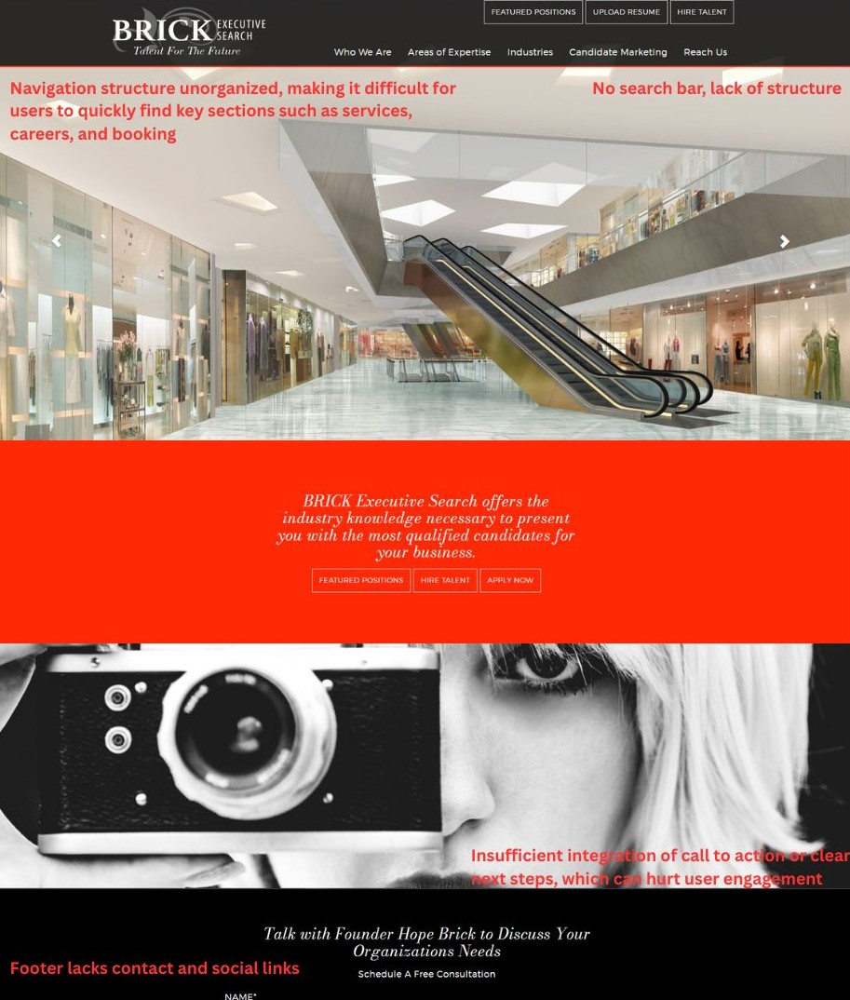
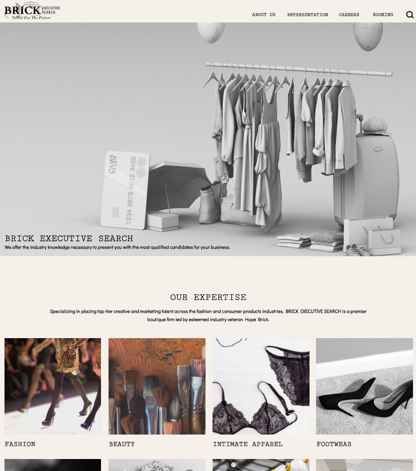
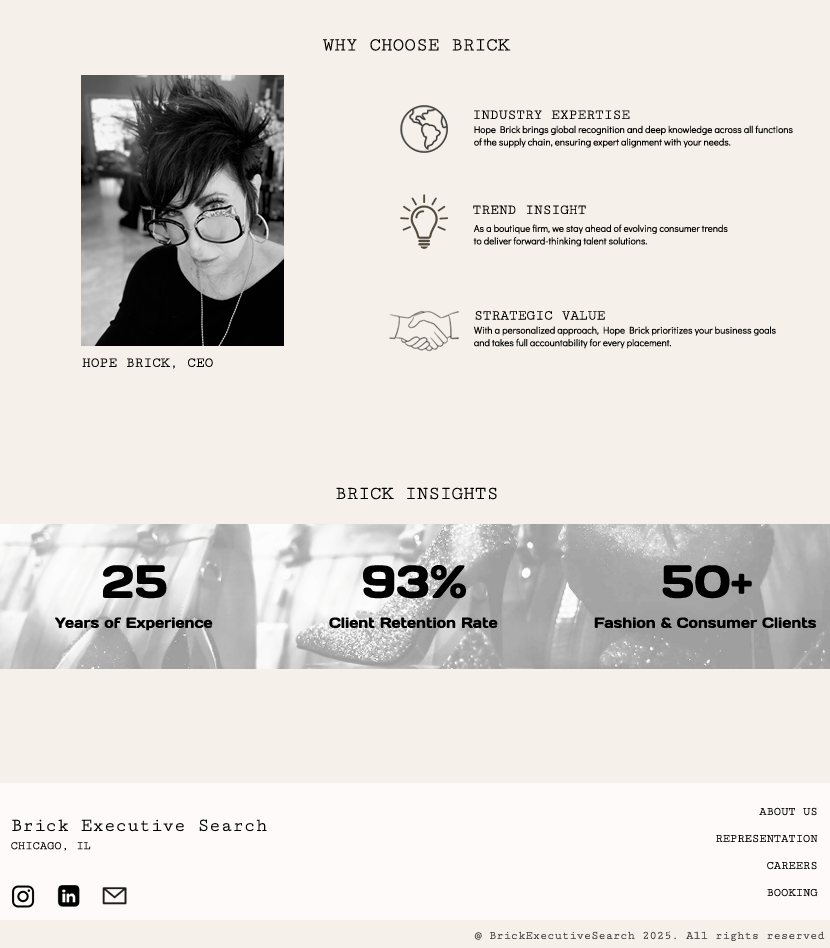

Brick Executive Search
Digital Marketing Internship
Overview
Redesigned the Brick Executive Search homepage to elevate brand perception, streamline user navigation, and drive client engagement. As the UX/UI Designer, I led the end-to-end design process-conducting research, developing a modern visual identity, optimizing site structure, and enhancing content presentation to align with business goals and marketing strategy.
Goal
The primary goal of the redesign was to create a clean, modern, and user-friendly homepage that clearly communicates Brick Executive Search’s value proposition while improving navigation and engagement. This aimed to enhance the firm's online presence and attract both potential clients and job candidates.
Role
UX/UI Designer
Tools
Figma
Project Type
Website Redesign
Original Website
- Conducted user-centered design by analyzing target audience needs to inform layout and content hierarchy.
- Crafted high-fidelity prototypes in Figma to visualize the modernized aesthetic and interactive elements.
- Collaborated on refining key messaging and visual assets to ensure brand consistency and clarity across the homepage.

Key Design Solutions
- Visual Concept Change: I drastically changed the visual style of the website's homepage to use a clean, modern aesthetic with strong typography and whitespace. This was to create a contemporary, sophisticated, high-end impression that aligns with the premier boutique firm. This overall increases readability and brand perception.
- Restructured Navigation: The main navigation menu has been changed to "about", "representation", "careers", and "booking". I also added a search icon. This simplifies the site's structure and focuses the user pathway towards key actions like the representation the company can provide, booking services, and open positions. The terminology used in the menu is intended to resonate directly with potential clients or candidates for jobs.
- Value Proposition: The main headline clarifies the business name with the clear tagline describing the company's value proposition. The light background and the black text allows for the text to be legible, and provides visitors a clear direct statement upon landing on the website.
- Visually Enhanced "Our Expertise" Section: The industry specializations are presented using pictures and descriptive text highlighting the industry. This is to make the firm's area of specialization highly scannable and visually engaging, allowing visitors to quickly identify relevant industries. Clicking on the picture or text will bring you to a corresponding page, allowing potential clients to understand more of what Brick Executive Search offers.
- Changed the "Why Choose Brick" Section: I highlighted 3 core strengths: industry expertise, trend insight, and strategic value. This is accompanied with 3 icons differentiating the three. This is to clearly articulate the firm's unique selling points in a structured, easy to read format.
- Added "Brick Insights" Section: A new section was added on the home page to showcase key performance indicators using large numbers. This type of data visualization is not present on the original site. This is to build credibility and trust by quantifying the firm's success and experience. This will leave a big impression with the visitors.
- Redesigned Footer: I changed the footer of the home page to include the main navigation links, social media accounts, and email. This is to provide users with easy access to the company's social media profiles, improving user experience and connectivity.

